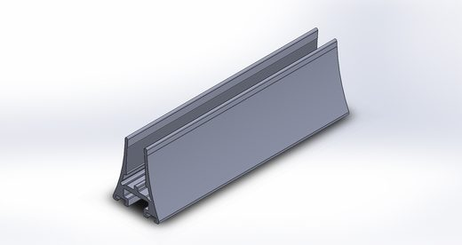
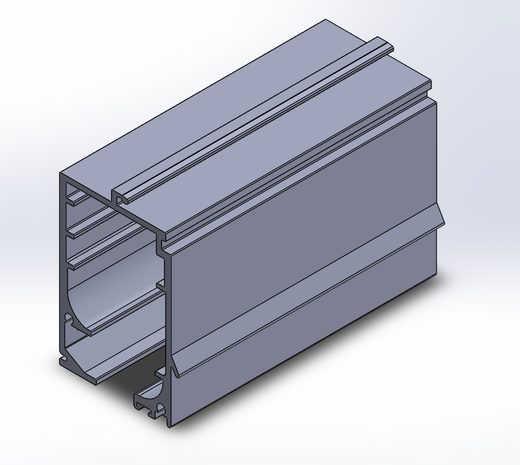
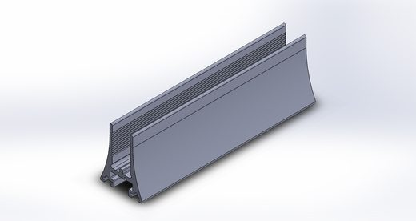
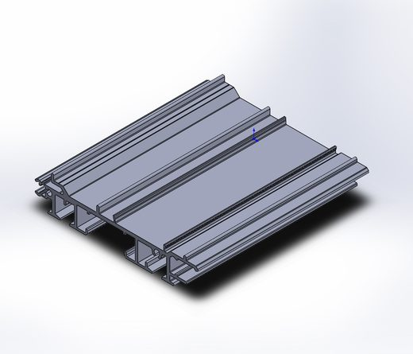
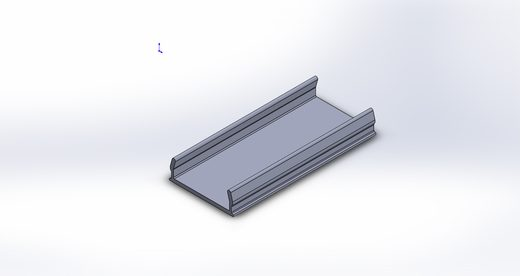
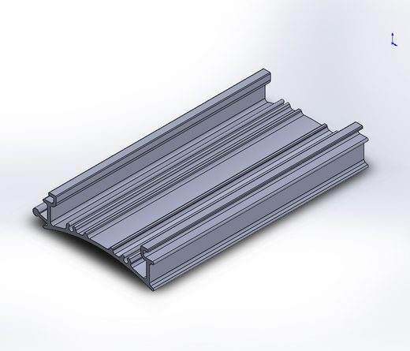
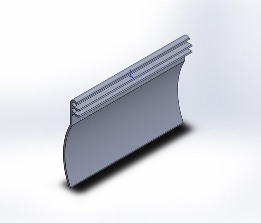
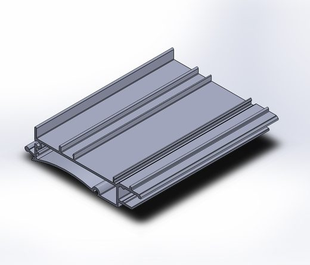
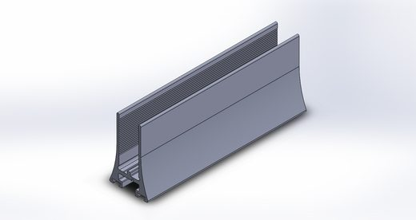

Blindex Sacadas
Sistema de envidraçamento de sacadas desenvolvido a partir da NBR 16259/2014 — a norma definiu o produto, não o contrário. Eleito por dois anos consecutivos o melhor sistema do Sul do Brasil, une segurança, praticidade de manuseio e vedação superior em um sistema híbrido testado e homologado.
1Tipologia e diferenciais
conteúdo consolidadoNorma primeiro, produto depois
Desenvolvido a partir dos critérios técnicos da NBR 16259/2014, e não adaptado a ela a posteriori — garante conformidade e segurança absoluta desde a concepção.
Travamento múltiplo
Elimina a sensação de queda do vidro por meio de travamentos que impedem o desencaixe e garantem estabilidade da folha.
Vedação em 4 barreiras + dreno
Mecanismo exclusivo de vedação contra chuva e vento, com quatro barreiras superiores e sistema de dreno interno próprio.
Acabamento anti-corte
Perfis internos cortados a 90°, sem alumínio exposto ou cortante — reduz risco de acidente na instalação e no uso.
Leveza de manuseio
Projetado para ser operado com facilidade mesmo por idosos, crianças ou pessoas de baixa estatura.
Ferragens 100% inox
Perfis superiores robustos e inferiores leves; trilho slim de 38mm de altura — mais área de vidro, menos alumínio aparente.
2Limites e dados técnicos
dados de campo confirmados| Parâmetro | Especificação |
|---|---|
| Largura máxima do vão | Sem limite |
| Altura máxima do vão | 8mm até 1600mm · 10 e 12mm até 2600mm |
| Quantidade de folhas | Sem limite (ideal até 12 folhas por empilhamento) |
| Largura máxima da folha | 810mm (ideal ~550mm) |
| Peso do vidro — 8mm | 20 kg/m² |
| Peso do vidro — 10mm | 25 kg/m² |
| Peso do vidro — 12mm | 30 kg/m² |
Dados necessários para orçamento
- Largura do vão
- Altura do vão
- Quantidade de folhas
- Cor do vidro
- Cor do alumínio
3Perfis utilizados
Perfis próprios do sistema. Fichas completas na biblioteca de perfis — ver seção de referência ao final do catálogo.17 perfis













4Detalhe de montagem
a preencherSequência de montagem em elaboração
Esta seção receberá o passo a passo ilustrado de instalação (fixação de trilhos, colagem, encaixe de folhas e travamento) conforme os desenhos forem liberados. Estrutura de exibição: etapas numeradas, uma imagem por etapa.
5Detalhe de usinagem
a preencherEspecificações de corte e furação em elaboração
Cotas de corte, furação e rebaixo por perfil serão adicionadas aqui, no formato de ficha técnica com cotas — mesmo padrão da ficha de perfil.